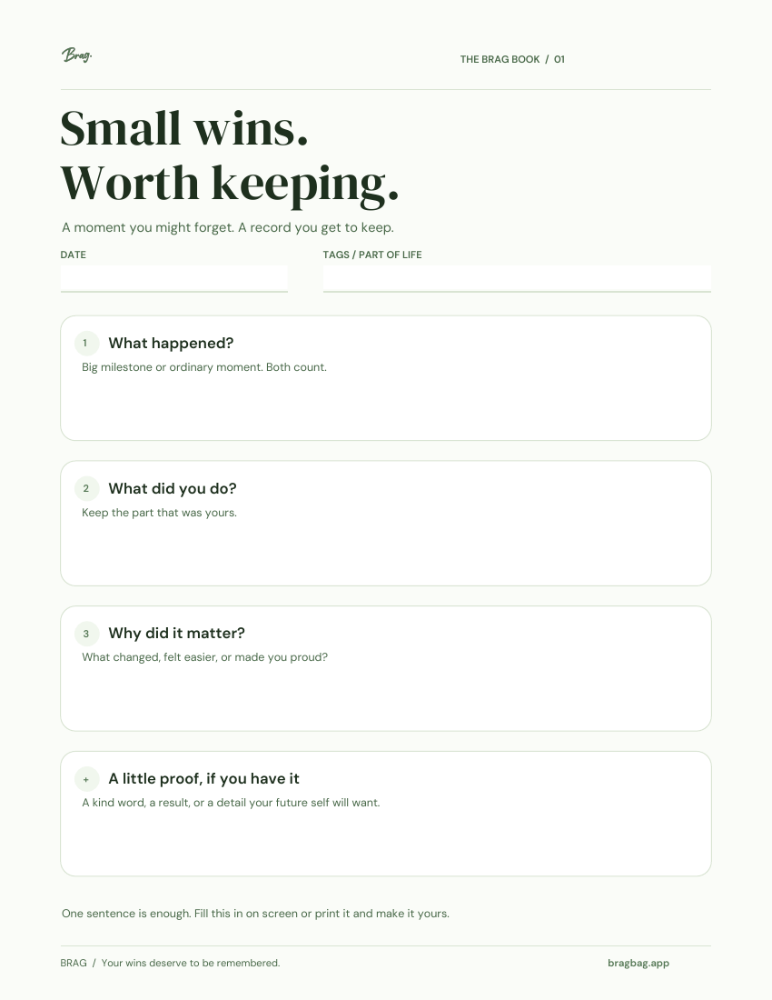
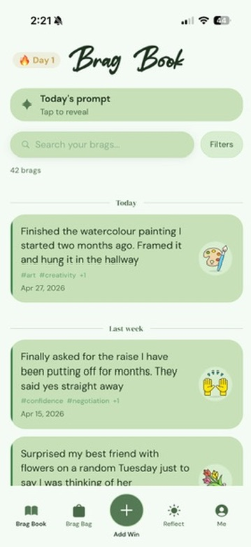

Despite the name, a brag book does not have to be loud or performative. It is simply a place to keep evidence of what you have done before the details fade. Some people call it a wins tracker, accomplishment journal, success log, or smile file.
It can focus entirely on work, or it can hold personal wins too. The useful version is the one you will actually keep and want to look back through.
Free to use · No signup
A simple brag-book template
Copy this into a notebook, document, or BRAG entry. Use the fields that help; a single sentence can be enough.
Date: What happened: What I did: Why it mattered: Evidence or feedback (optional): Tags (optional):

A little more room for your wins.One page. Print it or fill it in on screen.
Three filled-in brag-book examples
These are illustrative examples, not user stories. Notice how each keeps enough detail to remember the moment without turning it into an essay.
A work accomplishment
What happened: A project handoff had unclear owners.
What I did: Wrote a checklist and confirmed who owned each step.
Why it mattered: The next handoff had named owners and an agreed plan.
Entry: “Made a shared handoff checklist so everyone knew their next step.”
A personal win
What happened: My painting sat unfinished for two months.
What I did: Finished it, framed it, and put it in the hallway.
Why it mattered: I made time for something I enjoy.
Entry: “Finished the painting I kept putting off. It’s finally on the wall.”
A hard moment handled well
What happened: I was overloaded and wanted to say yes to another request.
What I did: Explained my capacity and agreed on a later date.
Why it mattered: I protected time for the commitment I had already made.
Entry: “Said I couldn’t take on more today and offered a realistic alternative.”
What this looks like in BRAG
Save the moment in your own words, add tags, and revisit it in your Brag Book. Personal wins and work accomplishments can live in the same record.
You can use the free template anywhere. BRAG is an option when you want that record on your iPhone or iPad.

Why keep a brag book?
Daily life gives unfinished work more attention than completed work. Once a problem is solved, your mind moves to the next one. Over time, that can create a distorted picture in which every struggle is vivid and your progress is hard to retrieve.
A brag book creates a more accurate record. It can help you:
- prepare for performance reviews, interviews, and promotion conversations;
- remember examples when someone asks about your strengths;
- spot patterns in the work and experiences that matter to you;
- hold onto kind feedback instead of letting it vanish in an inbox;
- notice progress during a difficult or discouraging season.
What goes in a brag book?
Work accomplishments
Projects you shipped, problems you solved, customers you helped, processes you improved, or decisions you unblocked. Include your contribution and the effect whenever you can.
Personal wins
Habits you kept, boundaries you held, difficult things you completed, creative work you made, health milestones, and moments when you showed up for someone else.
Positive feedback
Specific praise from a customer, manager, teammate, friend, teacher, or family member. Save enough context to remember what prompted it.
Growth moments
Skills you practiced, feedback you applied, risks you took, and situations you handled differently than you would have before.
How detailed should an entry be?
Enough to bring the moment back. One sentence is often enough for a personal win. A career accomplishment may benefit from three parts: the situation, what you did, and what changed.
Quick personal win: “Went for the run even though I wanted to skip it, and felt better afterward.”
Work win: “Created a shared launch checklist after two handoff problems. The next release had clear owners and no last-minute access issues.”
Digital or physical?
A notebook can be satisfying and distraction-free. A document or spreadsheet is searchable. A dedicated app can make entries faster, add reminders, and help you see patterns over time. The format matters less than privacy, ease, and consistency.
If you are recording work information, respect your employer’s confidentiality rules. Describe your contribution without storing sensitive customer data, protected company details, or anything you are not allowed to keep in a personal tool.
How often should you update it?
Save a win when it is fresh, or set aside five minutes once a week. Do not wait for something “big enough.” Small entries are what turn an empty page into a meaningful record.
Then look back occasionally. The collection may show that you are more consistent, resourceful, brave, or generous than any single day made obvious.
Your brag book can fit in your pocket
BRAG gives personal and career wins a private home on iPhone and iPad—with a Brag Bag that grows as your record does.
Download BRAG on the App Store